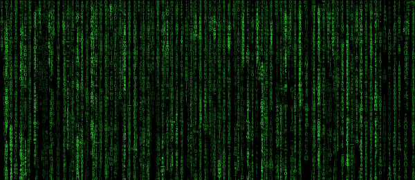

Articles
Build a Handwritten Text Recognition System using TensorFlowThis article explains how to build a modern (handwritten) text recognition system. Besides a theoretical introduction, the code of the SimpleHTR repository is discussed. |
FAQ: Build a Handwritten Text Recognition System using TensorFlowThere were some questions regarding the last article which are discussed here: how to use custom datasets, how to detect text on line-level and how to compute a confidence score for the recognized text. |
An Intuitive Explanation of Connectionist Temporal ClassificationCTC is an essential part of modern text and speech recognition systems. This article explains how CTC works without hiding the clever ideas it is based on behind complicated formulas. |
Beam Search Decoding in CTC-trained Neural NetworksTo get the recognized text from a CTC-trained neural network, its output must be decoded. Beam search decoding is a fast and well-performing algorithm which optionally can integrated a character-level language model. |
Word Beam Search: A CTC Decoding Algorithm
Word beam search is an extension to the vanilla beam search algorithm. It avoids spelling mistakes of words, allows arbitrary numbers and punctuation marks between words and optionally makes use of a word-level language model. This article gives a high-level overview of how the algorithm works. |
What a text recognition system actually sees
What happens inside the "black box" of a text recognition system? At which image-regions do they look at to identify the text? Do these systems exploit some clever patterns? Or do they cheat by using dataset-specific features? |
GPU Image Processing using OpenCL
Many image processing operations benefit from being computed in parallel. This article shows how to boost dilation and erosion by implementing them for the GPU using OpenCL. |
Fast Inverse Square Root
Analysis of a simplified version of the famous "fast inverse square root hack" from the 90s. |